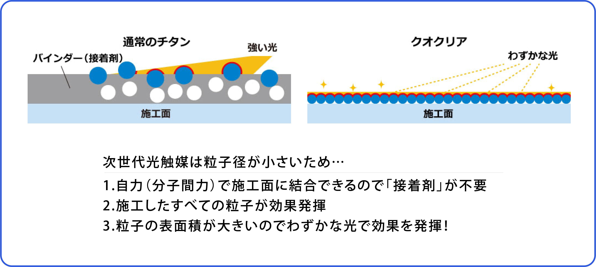
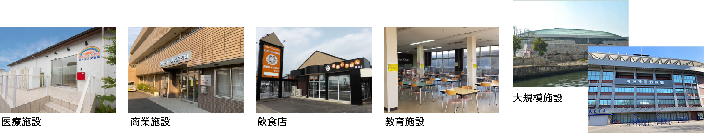

一度の施工で、
空間そのものを抗菌環境に

毎回の除菌・消毒の手間・ストレスから開放。
安全で効果も高い「光触媒」
太陽光、蛍光灯、LEDなどの光を受けて強力な酸化力を生み、 接触してくる有機物や細菌などの有機物質を除去する 環境浄化物質「光触媒」。
次世代光触媒「クオクリアは、独自の技術により、酸化チタン分子を素粒子(2nm)にまで分解し、水中に安定分散させた 無色透明のチタン素粒子分散液です。 粒子2nm以下のチタン素粒子は表面上の原子に対し電子結 合(自己結合)するため、従来の光触媒の弱点だったバインダー(接着剤)の必要がありません。

光触媒は、コロナウイルスへの有効性も報じられています。
●●●次世代光触媒「クオクリア」の特長

資料編
●●●光触媒施工時のATP濃度の推移

アルコールや次亜塩素酸は、施工直後は汚れの量が大きく減少しますが、時間の経過 と共に汚れの量が多くなっていきます。それに対して、光触媒は長時間経過しても効果 が持続していることが分かります。
●●●施工結果
《キッコーマンバイオケミファ社・ルミテスターSmartを使用したATP+ADP+AMPふき 取 り 検 査( A 3 法 )* に よ る A T P 濃 度 チ ェ ッ ク 》
※検査値の目安 :クリーンルームの合格基準値=500以下
■介護施設・入り口(ドアノブ)

●介護施設・手すり

■介護施設・浴室

●●●他の抗ウイルス・抗菌対策との比較

施工例
次世代光触媒は、施工面に電子的に結合するので、どんな材質にも結合することがで きます。 また、弱い光でも光触媒機能を発揮するため、屋内・屋外を問わず施工可能です。
〈施工実績〉 
お気軽にお問い合わせください。
お見積無料!
お問合せ・資料請求はこちらからどうぞ
お問合せフォームへ